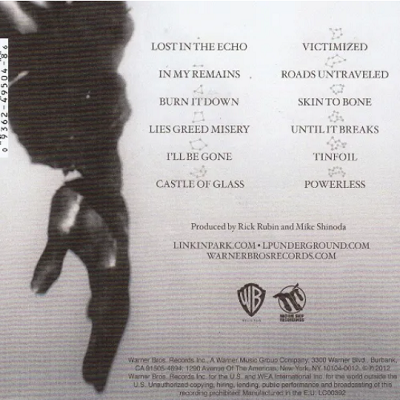
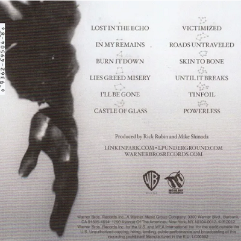

living things
 

Lançamento: 26 de Junho de 2012
Produzido por: Rick Rubin e Mike Shinoda
Gravadora: Warner Bros. Records/Machine Shop Recordings
O álbum foi lançado em 26 de junho de 2012 pela Warner Bros. Records. A produção do disco ficou a cargo do vocalista Mike Shinoda e de Rick Rubin, que também haviam co-produzido os dois álbuns anteriores do grupo, Minutes to Midnight (2007) e A Thousand Suns (2010).
A banda anunciou, através de várias entrevistas, que o álbum anunciava uma nova era para o grupo, combinando o antigo nu metal e rap rock com sons mais eletrônicos de trabalhos recentes, numa tentativa de, segundo eles, criar um som mais original. Ao fim de 2012, o Living Things já tinha vendido pelo menos 750 mil cópias nos Estados Unidos.
Produção e Gravação
Em junho de 2011, Chester Bennington revelou a revista Kerrang! que o Linkin Park já havia começado a trabalhar em novo material para seu quinto álbum. Ele explicou dizendo que “nós estamos trabalhando no novo disco há quase 2 meses. A música está ótima e estamos a frente do que esperávamos. Não há muito barulho acontecendo, mas há várias canções boas.” Mike Shinoda, um dos vocalistas, e Rick Rubin serviram como produtores do álbum. “Tipicamente nós nos reunimos uma vez por semana para ouvir e falar de algumas canções que compomos. Muito cedo no projeto, elas são muito mais longe do que foram nos dois últimos álbuns que fizemos. No A Thousand Suns havia muito ferro e fogo. Nós sabíamos, ‘Ok, não podemos ficar nisso pra sempre. Vamos deixar esta área e nós vamos voltar a isso quando recomeçarmos'”, disse Rubin. Bennington explicou que Rubin deu “espaço para sermos nós mesmos e trabalharmos a nossa maneira… Ele nos dá uma descrição clara e concisa do que ele gostou… Ele queria que nós tentássemos e nos esforçássemos a termos um som original novamente.” Ele também disse que Shinoda guiou a banda pelo processo de criação de cada canção e chamou a parceria de Shinoda e Rubin “nosso bilhete premiado”.
Em julho, Bennington falou a Rolling Stone que a banda planejava produzir o álbum em 18 meses e que ele ficaria chocado se o CD não fosse lançado ainda em 2012. Eles continuaram a trabalhar nas novas canções enquanto viajavam em turnê. Bennington comentou sobre a agenda do Linkin Park dizendo que “fazer turnê por dois anos é excruciante. Quando ficamos fazendo shows por dois anos até o membro mais resistente da banda, ao fim de tudo, se sentia terrivelmente cansado.” Ele elaborou melhor as ideias falando par a MTV que “nós começamos muito bem. Nós temos músicas ótimas, algumas ótimas Idéias. A criatividade continuou a jorrar por nós nos últimos anos, consistentemente.” Ele mais tarde contou em outra entrevista, em setembro de 2011, que a banda ainda estava no começo da produção do novo disco e disse: “Nós apenas começamos. Nós queremos continuar fluindo com a criatividade, então trabalhamos direto por muito tempo… Nós gostamos do caminho que tomamos.” Shinoda disse a revista Complex que eles ficaram quase um ano trabalhando no álbum, elaborando seu som, e completou dizendo que: “O álbum não perde nada da criatividade dos nossos antigos trabalhos e traz deles a antiga energia. É uma espécie de um som abrangente. Eu acho que nós fomos capazes de nós fomos capazes de reunir tudo que aprendemos no caminho até aqui em nossas carreiras para colocar tudo junto em cada canção e ainda sim conseguimos ser originais e avançados.” Shinoda disse a HitFix que o processo de fazer o álbum “parecia como ‘viajar nas drogas’… nós queriamos redefinir tudo”.
Mike voltou a comentar sobre Living Things ao Co.Create e falou sobre a arte da capa, dizendo que iria “enlouquecer os fãs… uma pessoa normal não será capaz de olhar para a capa e esquecer, eu entendo que é algo completamente novo, não somente a imagem mas mas o jeito como fizeram a imagem é algo completamente novo.” Em 9 de abril de 2012, a banda lançou um trailer do álbum no seu Tumblr oficial. Então a gravadora Warner Bros. Records lançou em 16 de abril de 2012, a capa do álbum e o lançamento do primeiro single, “Burn It Down”.
Composição
Em uma entrevista concedida em 21 de março de 2012 para a revista Kerrang!, Chester Bennington falou que a banda retornaria a “um território familiar” neste álbum, dizendo que “neste [novo] álbum, nós incorporamos muitos sons de guitarra com grandes refrões e coisas mais eletrônicas para transmitir um som bem forte sem que soa muito como metal. Isso soará mais familiar para as pessoas do que o A Thousand Suns foi, onde nós ficamos tipo ‘Dane-se, nós vamos ser malucos'”. Bennington também comentou que as letras do novo álbum seriam mais pessoais e evitariam política, completando dizendo “Nós escrevemos bastante sobre relacionamentos”. Bennington e Shinoda deram declarações similares a revista Spin, comentando: “Nós sabemos que temos a habilidade e as ferramentas para pegar essas ideias e transforma-las em algo que nós estamos de fato procurando, ao invés de cair de cabeça nisso e descobrir que isso realmente soba como nu-metal. Isso sempre será nojento para nós, mas nós podemos pegar elementos disso e reinventar a vibe, para torna-lo mais atual”. A banda anunciou então as novas canções e uma colaboração com o músico canadense Owen Pallett. Mike e Chester também anunciaram que haviam adotado novas influências e assuntos para o disco, especialmente sobre pessoas. Bennington disse à rádio Live 105 que a banda estava “abraçando tudo que eles haviam feito no passado”, tirando o que “tinha de melhor” dos quatro álbuns anteriores e “combinando-os neste novo álbum”.
Shinoda então explicou para a revista NME que o novo álbum não soaria como nu metal, mas ele assegurou que eles “voltariam as origens e capturariam o sentimento que não sentíamos há anos”. Ele também falou algo similar que Chester Bennington havia comentado sobre combinar elementos dos álbuns anteriores, dizendo: “Nós aprendemos muito com os álbuns que fizemos, então nós pegaremos tudo que aprendemos e vamos por neste álbum”. Como nos primeiros dois álbuns da banda, a penúltima faixa (“Tinfoil”) é um instrumental.
A banda numerou várias influências e inspirações para criar o Living Things. Shinoda disse a revista Rolling Stone que as canções “Skin to Bone” e “Roads Untraveled” contém traços de folk music influênciado em Bob Dylan. A sétima faixa “Victimized”, a Rolling Stone descreveu como “a canção mais agressiva que a banda escreveu em anos”, citando influências de punk rock de bandas como Pennywise e Dirty Rotten Imbeciles. Shinoda também notou e admitiu influências de punk rock nas canções como na curta faixa “Victimized”; o baixista Dave “Phoenix” Farrel notou que o título da canção “Battle Axe” que, para ele, descreve a canção. “No começo tem esse ‘barulho’ e então você sai.” O guitarrista Brad Delson contribuiu nos vocais da faixa “Until It Breaks”, como ideia do próprio.
Lançamento e divulgação
Para apoiar e divulgar o lançamento do novo álbum, a banda anunciou uma série de shows pelo mundo. Pela Europa, o grupo se apresentaria em alguns festivais como o Rock in Rio Lisboa em Portugal e no Rock Am Ring na Alemanha. Nos Estados Unidos, o Linkin Park anunciou vários shows com as bandas Incubus e MuteMath como parte da Honda Civic Tour de 2012. Como parte da turnê de divulgação do álbum, o Linkin Park fez quatro shows no Brasil em outubro de 2012 (São Paulo, Porto Alegre e dois no Rio de Janeiro).
Canções
Em 28 de março de 2012, Mike Shinoda confirmou que o primeiro single do álbum seria a canção “Burn It Down” e que ela seria lançado em 16 de abril tanto nas rádios como por download pela internet. Ele também avisou sobre o lançamento do videoclipe para a canção, lançado em 24 de maio, que foi dirigido por Joe Hahn.
Em 4 de junho de 2012, a banda liberou a canção “Lies Greed Misery”. No mesmo dia, a canção foi exibida no trailer do Video game Medal of Honor: Warfighter, da Electronic Arts no E3 2012. A canção “Castle of Glass” também foi confirmada como parte da trilha sonora do jogo Medal of Honor: Warfighter. Já a música “Powerless”, a décima-segunda e última faixa do álbum, esteve nos créditos finais do filme Abraham Lincoln: Vampire Hunter. O site Yahoo! liberou um trecho da canção com o trailer do filme.
A canção “Lost in the Echo” foi confirmada oficialmente como o segundo single deste álbum e foi lançada em 5 de outubro de 2012.
Recepção e Critica
Living Things recebeu críticas variadas dos especialistas com um tom positivo e agregou no site Metacritic uma nota total de 60 de 100, baseado na resenha de 15 críticos profissionais. Sergio Pereira da MusicReview deu ao álbum um parecer positivo, dando uma nota de 85 de 100. Ele disse que com este disco a banda “realmente retornou as suas origens com grande participação das guitarras, refrãos grandes e a ótima voz louca de Chester Bennington, enquanto o eletrônico aparecia para acentuar as canções.” Chad Childers da Loudwire deu a Living Things 4 de 5 estrelas, dizendo que o “álbum continua a expansão deles para o mundo que apresentaram em A Thousand Suns, mas também mostra mais da raiva que estava presente no primeiro álbum do grupo, Hybrid Theory.” Chris Epting do site Noisecreep descreveu Living Things como “uma coleção definitiva brilhante que representa uma banda no seu auge – novamente.” Rick Florino da Artistdirect disse que o álbum era “o melhor que a banda já lançou e um marco paro o rock em geral.”
The Guardian deu ao álbum 3 de 5 estrelas, dizendo que “Living Things é mais pessoal que A Thousand Suns, com temas subjacentes de se recuperar de experiências traumáticas. A exceção, “Burn It Down”, mostra sentimentos antiguerra ao estilo Depeche Mode com uma pegada eletrônica, enquanto as similaridades continuam em “Roads Untraveled” é uma balada estranha confessional”, e concluiu que “o disco teria se beneficiado mais por esse caminho, mas parece que a banda ainda está se regozijando desta ‘segunda vida'”.
Tim Grierson da About.com deu um parecer menos favorável ao álbum, dando uma nota de 2.5 de 5 estrelas, dizendo que Living Things é “uma coleção que tem muito da força deles em rap-rock, e embora seja muito ‘solvível’, essas 12 canções não tem muito impacto cumulativo. Como resultado, o álbum acaba sendo uma experiência dispersa ao invés de prender o ouvinte.”
Desempenho Comercial
O Living Things estreou na primeira posição na Billboard 200, a principal parada de sucesso americana, vendendo 223 000 cópias na sua primeira semana de vendas, segundo a Nielsen SoundScan. O álbum também ficou no topo das paradas de vários países, incluindo Alemanha e Nova Zelândia, e rapidamente recebeu a certificação de disco de ouro na Austrália após vender mais de 35 000 cópias naquele país. No Reino Unido, foram mais de 41 000 cópias vendidas na estreia, garantindo assim o primeiro lugar nas paradas britânicas. No Canadá o álbum também foi um sucesso comercial estreando no topo da lista dos mais vendidos com pelo menos 20 000 CDs encomendados em menos de uma semana.
músicas
- LOST IN THE ECHO
- IN MY REMAINS
- BURN IT DOWN
- LIES GREED MISERY
- ’LL BE GONE
- CASTLE OF GLASS
- VICTIMIZED
- ROADS UNTRAVELED
- SKIN TO BONE
- UNTIL IT BREAKS
- TINFOIL
- POWERLESS